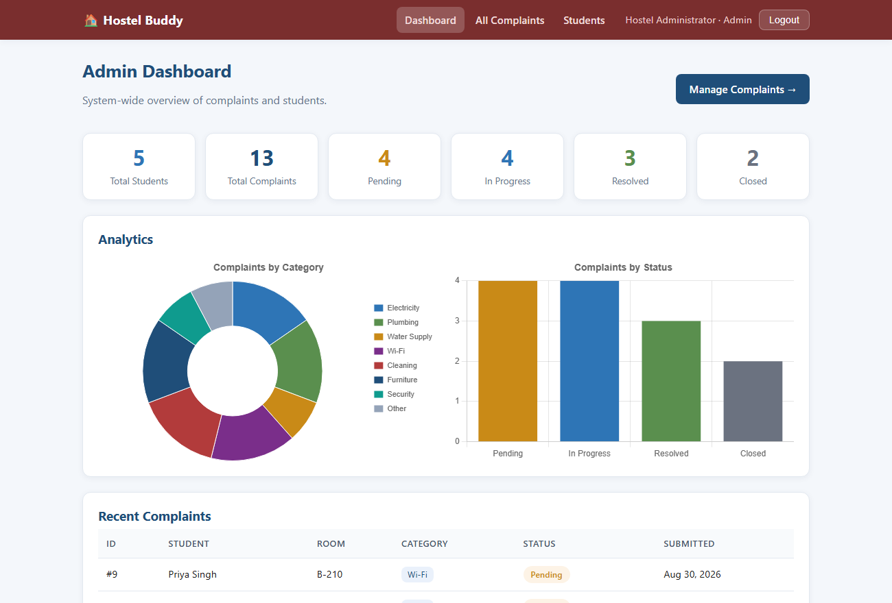

<meta charset="utf-8">
<title>Hostel Buddy — 80% Implementation Report</title>
<script>window.PagedConfig={auto:true,after:()=>{window.__PAGED_DONE=true;}};</script>
<style>
  :root{ --ink:#1a1a1a; --muted:#555; --line:#bcbcbc; --soft:#e7e7e7;
         --accent:#1f4e79; --accent2:#2e75b6; --green:#2f6b2f; --amber:#8a6111; --red:#a12626; }
  @page{ size:A4; margin:19mm 17mm 17mm 17mm;
    @top-right{ content:string(doctitle); font-family:Georgia,serif; font-size:8.5pt; color:#888; }
    @bottom-center{ content:"Page " counter(page); font-family:Georgia,serif; font-size:9pt; color:#666; } }
  @page :first{ @top-right{content:none;} @bottom-center{content:none;} }
  html{ font-family:Georgia,"Times New Roman",serif; color:var(--ink); font-size:10.4pt; line-height:1.48; }
  body{ margin:0; }
  h1,h2,h3,h4{ font-family:"Segoe UI",Arial,sans-serif; color:var(--accent); line-height:1.25; }
  h1{ string-set:doctitle "Hostel Buddy — 80% Implementation Report"; }
  h2{ font-size:15pt; margin-top:1.1em; border-bottom:2px solid var(--soft); padding-bottom:3px; break-after:avoid; }
  h3{ font-size:12pt; margin-top:.9em; break-after:avoid; }
  h4{ font-size:10.6pt; margin-top:.7em; color:var(--accent2); break-after:avoid; }
  p{ margin:.4em 0; text-align:justify; }
  ul,ol{ margin:.3em 0 .55em 0; padding-left:1.3em; }
  li{ margin:.2em 0; }
  code{ font-family:Consolas,monospace; font-size:8.9pt; background:#f2f2f2; padding:0 3px; border-radius:3px; }
  table{ border-collapse:collapse; width:100%; margin:.5em 0; font-size:9.3pt; }
  th,td{ border:1px solid var(--line); padding:4.5px 7px; text-align:left; vertical-align:top; }
  th{ background:var(--accent); color:#fff; font-family:"Segoe UI",Arial,sans-serif; font-weight:600; }
  tr:nth-child(even) td{ background:#f6f8fb; }
  .break{ break-before:page; }
  .avoid{ break-inside:avoid; }
  .pill{ display:inline-block; padding:1.5px 9px; border-radius:11px; font-size:8.3pt; font-weight:600; font-family:"Segoe UI",Arial,sans-serif; white-space:nowrap; }
  .done{ background:#e6f2e6; color:var(--green); border:1px solid #bcdcbc; }
  .todo{ background:#f3f4f6; color:#4b5563; border:1px solid #d3d6db; }
  /* Each variant carries the base rule itself rather than relying on a second
     class being present, so a box can never lose its padding and accent bar. */
  .box,.warn,.bug,.viva{ background:#f4f8fc; border-left:4px solid var(--accent2);
       padding:9px 13px; margin:.75em 0; font-size:9.8pt; break-inside:avoid; border-radius:0 4px 4px 0; }
  .box b{ color:var(--accent); }
  .warn{ background:#fdf6ee; border-left-color:#c98a17; }
  .warn b{ color:var(--amber); }
  .bug{ background:#fdecec; border-left-color:var(--red); }
  .bug b{ color:var(--red); }
  .viva{ background:#eef7ef; border-left-color:var(--green); }
  .viva b{ color:var(--green); }
  .box .lbl,.warn .lbl,.bug .lbl,.viva .lbl{ font-family:"Segoe UI",Arial,sans-serif; font-weight:700; font-size:8.4pt;
       text-transform:uppercase; letter-spacing:.6px; color:#fff; background:var(--accent2);
       padding:1px 7px; border-radius:9px; }
  .warn .lbl{ background:#c98a17; }
  .bug .lbl{ background:var(--red); }
  .viva .lbl{ background:var(--green); }
  figure{ margin:.7em 0; break-inside:avoid; text-align:center; }
  figure img{ max-width:100%; height:auto; border:1px solid var(--soft); border-radius:4px; }
  figure.plain img{ border:none; }
  figcaption{ font-size:8.6pt; color:var(--muted); margin-top:3px; font-style:italic; }
  .ms-head{ background:linear-gradient(90deg,#1f4e79,#2e75b6); color:#fff; padding:9px 15px; border-radius:7px;
            font-family:"Segoe UI",Arial,sans-serif; margin-top:1em; break-after:avoid; }
  .ms-head .pc{ font-size:20pt; font-weight:700; }
  .ms-head .ti{ font-size:12.5pt; font-weight:600; }
  .ms-head .dt{ font-size:9pt; opacity:.9; }
  .cover{ height:250mm; display:flex; flex-direction:column; align-items:center; justify-content:center; text-align:center; }
  .cover .kick{ font-family:"Segoe UI",Arial,sans-serif; letter-spacing:3px; text-transform:uppercase; color:var(--muted); font-size:10.5pt; }
  .cover .title{ font-family:"Segoe UI",Arial,sans-serif; font-size:38pt; font-weight:700; color:var(--accent); margin:6px 0 2px; }
  .cover .sub{ font-size:12pt; color:var(--muted); }
  .cover .rule{ width:120px; height:4px; background:var(--accent2); margin:15px auto; border-radius:2px; }
  .cover .badge{ font-family:"Segoe UI",Arial,sans-serif; font-size:15pt; font-weight:700; color:#fff;
                 background:linear-gradient(90deg,#2e75b6,#1f4e79); padding:8px 24px; border-radius:24px; }
  .cover .meta{ margin-top:24px; font-size:11pt; line-height:1.85; }
  .cover .meta b{ color:var(--accent); }
  .kpi{ display:flex; gap:9px; margin:.7em 0; break-inside:avoid; }
  .kpi div{ flex:1; text-align:center; border:1px solid var(--soft); border-radius:6px; padding:7px 4px; background:#f9fbfd; }
  .kpi .n{ font-family:"Segoe UI",Arial,sans-serif; font-size:16pt; font-weight:700; color:var(--accent); display:block; }
  .kpi .l{ font-size:8.2pt; color:var(--muted); }
  .bar{ height:13px; background:var(--soft); border-radius:7px; overflow:hidden; margin:.35em 0 .1em; }
  .bar span{ display:block; height:100%; background:linear-gradient(90deg,#2e75b6,#1f4e79); }
  .sig{ margin-top:26px; display:flex; justify-content:space-between; font-size:9.5pt; }
  .sig div{ width:44%; border-top:1px solid var(--line); padding-top:5px; text-align:center; color:var(--muted); }
</style>

<!-- ==================== COVER ==================== -->
<section class="cover">
  <div class="kick">Implementation Progress Report</div>
  <div class="title">Hostel&nbsp;Buddy</div>
  <div class="sub">Smart Hostel Complaint Management System</div>
  <div class="rule"></div>
  <div class="badge">30% &nbsp;·&nbsp; 50% &nbsp;·&nbsp; 80%</div>
  <div class="meta">
    <div><b>Group 19</b></div>
    <div>Department of Computer Science and Engineering</div>
    <div><b>IIIT Kottayam</b></div>
    <div style="margin-top:10px"><b>Reporting period:</b> 21 July — 5 September 2026</div>
    <div><b>Status:</b> 80% implementation complete</div>
  </div>
</section>

<!-- ==================== TEAM + PURPOSE ==================== -->
<section class="break">
  <h2 style="margin-top:0">1. Team Members</h2>
  <table>
    <tr><th style="width:50px">#</th><th>Member Name</th><th style="width:32%">Roll Number</th></tr>
    <tr><td>1</td><td>Pranjal Tyagi</td><td>2024BCD0053</td></tr>
    <tr><td>2</td><td>Dinesh Saini</td><td>2024BCD0033</td></tr>
    <tr><td>3</td><td>Ajinkya</td><td>2024BCS0173</td></tr>
    <tr><td>4</td><td>Saurabh</td><td>2024BCS0185</td></tr>
    <tr><td>5</td><td>Vijay</td><td>2024BCS0249</td></tr>
  </table>

  <h2>2. Purpose of This Report</h2>
  <p>This report records how <b>Hostel Buddy</b> was built from an empty repository to a working
  system that is <b>80% complete</b>. It is organised around the three implementation milestones
  set for the project — <b>30%</b>, <b>50%</b> and <b>80%</b> — and for each one it answers the
  same three questions:</p>
  <ol>
    <li><b>What was required</b> at that milestone, and what we actually delivered.</li>
    <li><b>What went wrong</b> — the problems, bugs and design dilemmas we hit.</li>
    <li><b>How we solved them</b>, and what we learned that changed how we worked afterwards.</li>
  </ol>
  <p>We have deliberately not written a report in which everything went smoothly. The most useful
  part of this document is Section 9, where every defect we found is listed with its root cause.
  Several of them were only found because we attacked our own running application rather than
  reading the code, and that is the single biggest lesson of the project so far.</p>

  <h3>2.1 How to read this document</h3>
  <table>
    <tr><th style="width:23%">Marker</th><th>Meaning</th></tr>
    <tr><td><span class="pill done">Done</span></td><td>Built, tested and committed.</td></tr>
    <tr><td><span class="pill todo">Remaining</span></td><td>Part of the final 20%, listed in Section 11.</td></tr>
    <tr><td><div class="bug" style="margin:0;padding:5px 9px"><span class="lbl">Bug</span></div></td>
        <td>A defect that reached working code and had to be fixed.</td></tr>
    <tr><td><div class="warn" style="margin:0;padding:5px 9px"><span class="lbl">Problem</span></div></td>
        <td>An obstacle or a design dilemma — not a defect, but it cost us time.</td></tr>
    <tr><td><div class="viva" style="margin:0;padding:5px 9px"><span class="lbl">Lesson</span></div></td>
        <td>What we carried forward into the next milestone.</td></tr>
  </table>

  <h3>2.2 Development model</h3>
  <p>We worked in an <b>incremental, phase-wise model</b>. The project was cut into numbered phases
  before any code was written, each ending in a runnable system with its own tests. Nothing was
  merged until the whole suite passed. This is why a milestone can be demonstrated at any point:
  there is no phase in the history where the application does not start.</p>
  <div class="box"><span class="lbl">Why not waterfall</span><br>
  Our requirements changed mid-project — the instructor supplied a revised ER model with three user
  roles after the two-role system was already working. A waterfall plan would have made that a
  crisis. Because every layer was isolated and covered by tests, the migration was carried out as
  seven small phases with the suite green at the end of each one.</div>
</section>

<!-- ==================== OVERVIEW ==================== -->
<section class="break">
  <h2 style="margin-top:0">3. Milestone Overview</h2>

  <div class="bar"><span style="width:80%"></span></div>
  <p style="text-align:center;font-size:9pt;color:#555;margin-top:2px">
  <b>80% complete</b> — 30%, 50% and 80% milestones delivered; final 20% listed in Section 11</p>

  <table>
    <tr>
      <th style="width:9%">Milestone</th>
      <th style="width:26%">Required deliverable</th>
      <th>What we delivered</th>
      <th style="width:17%">Period</th>
      <th style="width:10%">Status</th>
    </tr>
    <tr>
      <td><b>30%</b></td>
      <td>Git repository, project skeleton, login module, database setup</td>
      <td>Version-controlled repository, layered Express skeleton, six-table SQLite schema applied on
          boot, and a complete authentication module (registration, login, JWT, role guards)</td>
      <td>21 July 2026</td>
      <td><span class="pill done">Done</span></td>
    </tr>
    <tr>
      <td><b>50%</b></td>
      <td>Major functional modules working end to end</td>
      <td>Complaint module, staff complaint management with search and the status workflow,
          dashboards with analytics, and the full web front end over all of it</td>
      <td>21 July – 24 Aug 2026</td>
      <td><span class="pill done">Done</span></td>
    </tr>
    <tr>
      <td><b>80%</b></td>
      <td>Begin integration testing; prepare unit test cases</td>
      <td>Self-contained integration harness running <b>265 checks across six suites</b> on every
          push, a full security and robustness audit, the three-role multi-hostel migration to the
          instructor's ER model, and video attachments</td>
      <td>30 Aug – 5 Sept 2026</td>
      <td><span class="pill done">Done</span></td>
    </tr>
  </table>

  <h3>3.1 The system as it stands today</h3>
  <div class="kpi">
    <div><span class="n">6</span><span class="l">database tables</span></div>
    <div><span class="n">3</span><span class="l">user roles</span></div>
    <div><span class="n">17</span><span class="l">API endpoints</span></div>
    <div><span class="n">12</span><span class="l">web pages</span></div>
    <div><span class="n">265</span><span class="l">automated checks</span></div>
    <div><span class="n">0</span><span class="l">failing checks</span></div>
  </div>

  <h3>3.2 Technology used</h3>
  <table>
    <tr><th style="width:20%">Layer</th><th>Technology</th><th style="width:38%">Why</th></tr>
    <tr><td>Front end</td><td>HTML5, CSS3, vanilla JavaScript, Chart.js</td>
        <td>No build step, so any team member can open the project and run it</td></tr>
    <tr><td>Back end</td><td>Node.js + Express, layered as routes → controllers → services → repositories</td>
        <td>Each layer has one job, which is what made the later migration survivable</td></tr>
    <tr><td>Database</td><td>Node's built-in <code>node:sqlite</code></td>
        <td>No native compiler needed — see Problem P-1</td></tr>
    <tr><td>Authentication</td><td>JWT + bcrypt, role-based access control</td>
        <td>Stateless, matches the scaling requirement in the SRS</td></tr>
    <tr><td>Security</td><td>Helmet headers with CSP, rate-limited login, byte-level upload checks</td>
        <td>Added in the hardening phase and strengthened by the audit</td></tr>
    <tr><td>Testing</td><td>Custom integration harness on Node's <code>fetch</code>, GitHub Actions</td>
        <td>Runs the real HTTP API, not mocks</td></tr>
  </table>
</section>

<!-- ==================== 30% ==================== -->
<section class="break">
  <div class="ms-head"><span class="pc">30%</span> &nbsp;<span class="ti">Foundation — Repository · Skeleton · Database · Login</span><br>
  <span class="dt">Phases 0 – 1 &nbsp;·&nbsp; completed 21 July 2026</span></div>

  <h3>4.1 What this milestone required</h3>
  <p>A version-controlled project that starts, connects to a database, and can tell one user from
  another. Nothing user-facing yet — this milestone is about making sure the ground is solid before
  anything is built on it.</p>

  <h3>4.2 What we delivered</h3>
  <table>
    <tr><th style="width:26%">Deliverable</th><th>Detail</th></tr>
    <tr><td><b>Git repository</b></td>
        <td>Initialised with <code>.gitignore</code> (secrets, database files and uploads excluded),
            <code>.env.example</code> committed in place of the real <code>.env</code>, and one
            commit per phase so the history reads as a build log rather than a dump.</td></tr>
    <tr><td><b>Project skeleton</b></td>
        <td>Four-layer structure: <code>config/</code> (environment, constants), <code>db/</code>
            (connection, schema, seed), <code>middleware/</code> (auth, errors, logging, uploads,
            security) and <code>modules/</code>, where each feature owns its routes, controller,
            service and repository.</td></tr>
    <tr><td><b>Database setup</b></td>
        <td><code>schema.sql</code> applied automatically at start-up and written to be idempotent,
            so a fresh clone needs no migration step. Enum columns carry SQL <code>CHECK</code>
            constraints; foreign keys are enforced with <code>PRAGMA foreign_keys = ON</code>.</td></tr>
    <tr><td><b>Login module</b></td>
        <td>Registration and login with bcrypt password hashing, JWT issue and verification,
            <code>requireAuth</code> and <code>requireRole</code> middleware, a seeded administrator
            account, and profile endpoints.</td></tr>
    <tr><td><b>Health endpoint</b></td>
        <td><code>GET /api/health</code>, later used by the test harness to know when the server is
            ready.</td></tr>
  </table>

  <h3>4.3 Problems faced at this milestone, and how we solved them</h3>

  <div class="bug"><span class="lbl">Problem P-1</span> — <b>The database library would not install.</b><br>
  <b>What happened:</b> Our technical design named <code>better-sqlite3</code>. Installing it starts
  a native C++ build through <code>node-gyp</code>, which failed on a team machine that did not have
  Visual Studio build tools. A group project graded on several different machines cannot depend on a
  compiler toolchain being present.<br>
  <b>How we solved it:</b> Switched to Node's built-in <code>node:sqlite</code> module, which offers
  the same synchronous prepared-statement API with no native compilation. The SQL and the schema did
  not change at all — only the connection module.<br>
  <b>Trade-off we accepted:</b> <code>node:sqlite</code> is still marked experimental and prints a
  warning, which we silence in the npm scripts. Because all SQL is confined to the repository layer,
  moving back to <code>better-sqlite3</code> or on to PostgreSQL later would touch two files.</div>

  <div class="bug"><span class="lbl">Bug B-2</span> — <b>The login page told attackers which emails exist.</b><br>
  <b>What happened:</b> Signing in with an unknown address returned "no such user", while a known
  address with the wrong password returned "wrong password". Anyone could therefore discover which
  email addresses had accounts simply by trying them — a user-enumeration weakness.<br>
  <b>How we solved it:</b> Both failures now return the same generic <code>401 Invalid credentials</code>.<br>
  <b>Lesson:</b> Security messages should be deliberately vague; ordinary usability messages should
  be specific. Knowing which of the two you are writing is the whole skill.</div>

  <div class="warn"><span class="lbl">Problem P-3</span> — <b>Where should business rules live?</b><br>
  <b>The dilemma:</b> The rule "a student may only edit a complaint while it is Pending" could be
  checked in the route handler in two lines. We debated this properly because it sets the pattern for
  the entire codebase.<br>
  <b>What we decided:</b> Enforce it in the <b>service layer</b>. A route-level check protects one
  route; if a second entry point ever calls the same operation — a bulk action, an admin tool, a test
  helper — a route-only guard is silently bypassed.<br>
  <b>Why it mattered later:</b> This decision is the reason the three-role migration at 80% was
  possible. Because every rule already lived in the services, changing who may call what meant
  changing the services, not hunting through routes.</div>

  <div class="warn"><span class="lbl">Problem P-4</span> — <b>The seeded admin account silently failed to appear.</b><br>
  <b>What happened:</b> <code>.env</code> is deliberately not committed. On a fresh clone
  <code>ADMIN_PASSWORD</code> was therefore unset, the seed quietly created nothing, and the next
  person could not log in — with no error to explain why.<br>
  <b>How we solved it:</b> Added a start-up check that prints a clear warning when a required
  variable is missing, shipped <code>.env.example</code> as a template, and made the application
  <b>refuse to start in production</b> on default credentials or a default JWT secret.</div>

  <h3>4.4 Verification at 30%</h3>
  <p>Integration suite <code>tests/auth.test.js</code> — <b>24 checks</b>, all passing: registration
  validation, duplicate-email rejection, password hashing (never returned to the client), login
  success and failure, token verification, expiry handling, and the role guard refusing a student on
  an admin route.</p>
</section>

<!-- ==================== 50% ==================== -->
<section class="break">
  <div class="ms-head"><span class="pc">50%</span> &nbsp;<span class="ti">Major Modules Functional</span><br>
  <span class="dt">Phases 2 – 5 &nbsp;·&nbsp; 21 July – 24 August 2026</span></div>

  <h3>5.1 What this milestone required</h3>
  <p>The application should now do the job it exists for: a student raises a complaint and tracks it;
  an administrator works through the queue; both see meaningful statistics. Every feature must be
  reachable from a real interface, not only from the API.</p>

  <h3>5.2 What we delivered</h3>
  <table>
    <tr><th style="width:24%">Module</th><th>Capability</th></tr>
    <tr><td><b>Complaint core</b></td>
        <td>Create (with optional photo), list own complaints, view one, edit and delete — the last
            two allowed only while the complaint is Pending, and only for its author.</td></tr>
    <tr><td><b>Staff complaint management</b></td>
        <td>The whole queue with search by complaint id, student name or room; filters by category
            and status; pagination; and a status workflow with remarks.</td></tr>
    <tr><td><b>Dashboards</b></td>
        <td>A student dashboard counting their own complaints by state, and a staff dashboard with
            totals, a status breakdown, a category distribution chart and recent activity. All
            aggregation is done in SQL with <code>GROUP BY</code> rather than in JavaScript.</td></tr>
    <tr><td><b>Web front end</b></td>
        <td>Twelve pages built to the SRS wireframes — landing, login, register, both dashboards,
            raise a complaint, my complaints, profile, the staff queue, the student list, and a
            styled 404 — sharing one design system and one network layer.</td></tr>
    <tr><td><b>Seed data</b></td>
        <td>A repeatable demo dataset so any team member can show the product in a known state.</td></tr>
  </table>

  <h3>5.3 Problems faced at this milestone, and how we solved them</h3>

  <div class="bug"><span class="lbl">Bug B-1</span> — <b>Photo uploads broke every complaint submission.</b><br>
  <b>What happened:</b> The create-complaint form sends <code>multipart/form-data</code> because it
  carries an image, but our JSON body-parser ran first and saw nothing. <code>req.body</code> came
  back empty, so validation rejected every single submission — including perfectly valid ones.<br>
  <b>Root cause:</b> Middleware order. The file-upload middleware must run <i>before</i> the fields
  are readable, and we had ordered the validator ahead of it.<br>
  <b>How we solved it:</b> Fixed the order to <code>upload → validate → controller</code>, and wrote
  the required order into the architecture document so nobody re-orders it by accident.<br>
  <b>Lesson:</b> Middleware order is part of the contract, not an implementation detail.</div>

  <div class="bug"><span class="lbl">Bug B-3</span> — <b>The resolution date kept moving.</b><br>
  <b>What happened:</b> We set <code>resolved_at = now</code> whenever the status was Resolved. So
  every later edit — even just correcting a typo in the remarks — pushed the resolution time forward,
  and moving a complaint from Resolved to Closed reset it again. The date became meaningless.<br>
  <b>How we solved it:</b> Set <code>resolved_at</code> only when it is currently empty and the
  complaint has reached Resolved.<br>
  <b>Lesson:</b> "The first time X happens" is a different rule from "whenever X is true", and they
  look identical until you read them carefully.</div>

  <div class="bug"><span class="lbl">Bug B-4</span> — <b>The client could award itself a status.</b><br>
  <b>What happened:</b> The create endpoint accepted a <code>status</code> field from the request
  body. A student could therefore submit a complaint already marked <i>Resolved</i> and skip the
  workflow entirely.<br>
  <b>How we solved it:</b> The service now <b>ignores</b> any status the client sends on create and
  forces <code>Pending</code>. Status changes only through the staff-only endpoint.<br>
  <b>Lesson:</b> Never accept a field from the client that the workflow owns.</div>

  <div class="bug"><span class="lbl">Bug B-5</span> — <b>Front-end pages each handled the token differently.</b><br>
  <b>What happened:</b> Pages made their own <code>fetch</code> calls. Some forgot the
  <code>Authorization</code> header, some forgot the content type, and an expired session produced a
  blank white page instead of sending the user to log in.<br>
  <b>How we solved it:</b> Wrote a single network layer, <code>js/api.js</code>, that attaches the
  token, sets headers, parses the response and redirects to login on a 401. Every page goes through
  it and no page does its own fetching.<br>
  <b>Lesson:</b> Centralise the network boundary. Cross-cutting logic repeated per page will be
  wrong on at least one page.</div>

  <div class="warn"><span class="lbl">Problem P-5</span> — <b>Should uploaded photos be access-controlled?</b><br>
  <b>The dilemma:</b> Complaint photos are served as static files. That path is not behind the
  ownership check that protects the complaint record, so anyone holding the URL can open the image.<br>
  <b>What we decided:</b> Accept it for this version and <b>write it down</b> rather than leave it
  undiscovered. File names are a timestamp plus random hex, so they are effectively unguessable, and
  the URLs only ever appear inside access-controlled pages. Gating them properly means streaming
  every image through an authenticated route or issuing signed storage URLs.<br>
  <b>Lesson:</b> An accepted weakness that is documented is a decision. The same weakness
  undocumented is an oversight — and a reviewer cannot tell them apart unless you write it down.</div>

  <div class="warn"><span class="lbl">Problem P-6</span> — <b>A strict security policy broke the landing page.</b><br>
  <b>What happened:</b> Adding a Content-Security-Policy of <code>script-src 'self'</code> blocked
  the one inline <code>&lt;script&gt;</code> we had — the "skip the landing page if already signed
  in" check. The choice looked like: weaken the policy, or lose the feature.<br>
  <b>How we solved it:</b> Neither. We moved the inline script into an external file, so the strict
  policy stayed exactly as it was.<br>
  <b>Lesson:</b> Keep scripts in external files from the very start. It costs nothing while you are
  writing them and it is what lets you ship a strict policy later.</div>

  <h3>5.4 Verification at 50%</h3>
  <p>Four integration suites — auth, complaints, admin and dashboard — totalling <b>103 checks</b>,
  all passing, plus a manual walkthrough of both user journeys in the browser with no console errors.</p>
  <div class="viva"><span class="lbl">Lesson</span> Reaching 50% taught us that a feature is not
  finished when the endpoint works. Three of the four bugs above were only visible from the front
  end, and one of them (B-1) made the flagship feature completely unusable while every server-side
  test was green.</div>
</section>

<!-- ==================== 80% ==================== -->
<section class="break">
  <div class="ms-head"><span class="pc">80%</span> &nbsp;<span class="ti">Integration Testing · Audit · Three-Role Migration</span><br>
  <span class="dt">Phase 6 + audit + Phases A – G &nbsp;·&nbsp; 30 August – 5 September 2026</span></div>

  <h3>6.1 What this milestone required</h3>
  <p>Begin integration testing and prepare test cases. We treated this as the milestone where the
  project stops being <i>written</i> and starts being <i>examined</i> — and it is where we found the
  most, by a wide margin.</p>

  <h3>6.2 What we delivered</h3>
  <ol>
    <li><b>A self-contained integration harness</b> — one command runs everything.</li>
    <li><b>A full audit</b> of the running application against hostile input, which found fifteen
        defects that the test suite had not.</li>
    <li><b>The three-role, multi-hostel migration</b> to the ER model supplied by the instructor.</li>
    <li><b>Video attachments</b> on complaints, with content verified by file signature.</li>
    <li><b>Continuous integration</b> — the suite runs on GitHub Actions on every push.</li>
  </ol>

  <h3>6.3 Integration testing — how it works</h3>
  <p>A single command, <code>npm test</code>, starts the server on its own port against a
  <b>throwaway database and upload directory</b>, waits for the health endpoint to answer, seeds the
  hostels and accounts the scoping tests need, runs all six suites in order, then shuts the server
  down and deletes both. Development data is never touched.</p>
  <table>
    <tr><th style="width:16%">Suite</th><th style="width:11%">Checks</th><th>What it proves</th></tr>
    <tr><td><code>auth</code></td><td><b>47</b></td><td>Registration across three roles, login, JWT guards, profile rules</td></tr>
    <tr><td><code>hostels</code></td><td><b>46</b></td><td>Public hostel list, super-admin-only hostel CRUD, manager provisioning</td></tr>
    <tr><td><code>complaints</code></td><td><b>56</b></td><td>Student lifecycle, ownership, Pending-only edits, photo and video attachments</td></tr>
    <tr><td><code>admin</code></td><td><b>52</b></td><td>Staff queue, search, filters, pagination, status transitions, <b>hostel scoping</b></td></tr>
    <tr><td><code>dashboard</code></td><td><b>23</b></td><td>Student and staff statistics, scoped aggregation</td></tr>
    <tr><td><code>regression</code></td><td><b>41</b></td><td>Every audit defect, pinned so it cannot come back</td></tr>
    <tr><td colspan="2"><b>Total &nbsp; 265 checks</b></td><td><b>All passing, in any order</b></td></tr>
  </table>

  <h3>6.4 The audit — how we tested</h3>
  <p>After the hardening phase we audited the whole application <b>against a running server</b>: the
  full suite, then manual probing of the API with malformed and hostile input, then a browser
  walkthrough of every page at desktop and mobile widths. <b>237 probe requests produced zero server
  errors</b>, and SQL injection, cross-site scripting, JWT forgery, mass assignment, ownership
  isolation and path traversal all held.</p>
  <p>Fifteen things did break. The five most serious are described below; the complete list is in
  Section 9. Every one is now pinned by a check in the regression suite.</p>

  <div class="bug"><span class="lbl">Bug B-8</span> — <b>A JSON object was stored as the text "[object Object]".</b><br>
  <b>What happened:</b> Registering with <code>{"name": {"a": 1}}</code> returned success and created
  an account literally named <code>[object Object]</code>. The same worked for a complaint
  description and for admin remarks, so the junk was visible on the staff complaint table.<br>
  <b>Root cause:</b> Every validator converted first and checked second —
  <code>if (!name || !String(name).trim())</code>. <code>String({})</code> is a non-empty string, so
  an object sailed through. The helper that would have caught this, <code>isNonEmptyString</code>,
  existed in our validators file and <b>was exported but never called anywhere</b>.<br>
  <b>How we solved it:</b> Rewrote validation around explicit type predicates and used them at every
  entry point. A value of the wrong type is now rejected, never converted.<br>
  <b>Lesson:</b> Dead code in a validation module is a warning sign, not clutter. Check the type
  <i>before</i> you touch the value.</div>

  <div class="bug"><span class="lbl">Bug B-9</span> — <b>Complaints could be marked Pending while carrying a resolution date.</b><br>
  <b>What happened:</b> The status endpoint checked only that the new status was one of the four
  valid names — not that the move was legal. Closed could go back to Pending. Since a resolution
  date is deliberately never cleared, rolling a Resolved complaint backwards produced a row that was
  <i>Pending with a resolution date</i>, and the student could then edit a complaint that had
  already been resolved.<br>
  <b>Root cause:</b> The lifecycle was drawn in our diagrams and documented in the README, but only
  the <i>vocabulary</i> was enforced in code, never the <i>ordering</i>. Validating set membership
  felt like validating the rule.<br>
  <b>How we solved it:</b> Added a transition guard: a complaint's position in the lifecycle may stay
  the same (a remarks-only edit) or move forward, never backward; a backwards move returns
  <code>409 INVALID_TRANSITION</code>. The staff dropdown now offers only the statuses the server
  will accept, so the rule is visible rather than a surprise error.<br>
  <b>Lesson:</b> A state machine drawn in a diagram is not a state machine in the code. If order
  matters, something has to compare positions.</div>

  <div class="bug"><span class="lbl">Bug B-12</span> — <b>Upload checking trusted the browser's word.</b><br>
  <b>What happened:</b> We checked the file type using the MIME type in the upload header — which is
  simply whatever the client writes there. A text file declared as <code>image/png</code> was
  accepted, stored with a <code>.png</code> extension, and served back as an image.<br>
  <b>How we solved it:</b> After the file is saved we read its <b>first bytes and identify the real
  format from its signature</b> — PNG's eight-byte magic number, JPEG's <code>FF D8 FF</code>,
  <code>RIFF….WEBP</code>. Anything that is not genuinely one of those, or whose bytes disagree with
  its declared type, is deleted and rejected.<br>
  <b>Lesson:</b> Anything the client sends is a claim, not a fact. If a decision depends on what a
  file <i>is</i>, read the file.</div>

  <div class="bug"><span class="lbl">Bug B-10</span> — <b>Our own tests were polluting the demo database.</b><br>
  <b>What happened:</b> <code>npm test</code> assumed a server was already running and crashed with a
  raw connection error when it was not. Worse, the suites hit the development server, so they wrote
  into the real database and never cleaned up. After a few runs the staff screen was full of "Test
  Student", "Dash Tester" and the <code>[object Object]</code> account from B-8. One test even opened
  the database file directly by hardcoded path, reaching around the API entirely.<br>
  <b>How we solved it:</b> Built <code>tests/run.js</code> — the harness described in §6.3. The test
  that poked the database now advances the complaint through the staff endpoint like a real user.<br>
  <b>Lesson:</b> A test that needs a human to set something up first will eventually be run without
  it. And an integration test that reaches around the API is testing the database, not the
  application.</div>

  <div class="bug"><span class="lbl">Bug B-16</span> — <b>Brute-force protection was switched off in the only environment we ever run.</b><br>
  <b>What happened:</b> The login rate limiter was replaced by a do-nothing function unless the
  environment was <code>production</code> — and the project is demonstrated in
  <code>development</code>. The protection we had designed, documented and presented in our
  architecture review <b>had never actually run once</b>.<br>
  <b>How we solved it:</b> The limiter is now active in development and production alike and disabled
  only under the test runner. It counts <i>failed</i> attempts, so a real user signing in repeatedly
  is never locked out while a password guesser still is.<br>
  <b>Lesson:</b> Security that only exists in an environment you never run is not security. Disable
  it for tests, not for yourselves.</div>

  <div class="viva"><span class="lbl">The main lesson of this milestone</span>
  Every one of the fifteen audit defects was found by <b>running</b> the application against hostile
  input — not by reading the code, and not by the test suite. The suites were green the entire time.
  They tested the paths we designed, which is exactly the input an audit must not limit itself to.</div>
</section>

<!-- ==================== MIGRATION + DATA MODEL ==================== -->
<section class="break">
  <h2 style="margin-top:0">7. The Three-Role Migration</h2>
  <p>Part-way through this milestone the instructor supplied a revised entity-relationship model. It
  replaced our two-table, two-role design (<i>users</i> and <i>complaints</i>; student and admin)
  with <b>six tables and three roles</b>, adding hostels as first-class entities and specialising
  <code>USER</code> into <code>STUDENT</code>, <code>MANAGER</code> and <code>SUPER_ADMIN</code>.</p>

  <div class="warn"><span class="lbl">Problem P-7</span> — <b>A change of data model with a working system on top of it.</b><br>
  <b>The risk:</b> This touched the schema, the seed, authentication, every complaint query, every
  dashboard figure, all guards and most of the front end. Done as one large change it would have
  left us with a broken application and no way to tell which part broke it.<br>
  <b>How we handled it:</b> Split into <b>seven phases (A – G)</b>, each one a separate commit with
  the full suite green before the next began. Phase A produced only a design document and a verified
  schema — no application code at all — so the model could be checked against the instructor's
  diagram before anything depended on it.<br>
  <b>Result:</b> The migration was completed without the application being broken at any commit.</div>

  <h3>7.1 Design decisions in the new model</h3>
  <ul>
    <li><b>Shared primary key.</b> Each subtype's <code>user_id</code> is both its primary key and its
        foreign key to <code>USER</code>, so one person cannot hold two identities.</li>
    <li><b>A complaint references <code>STUDENT</code>, not <code>USER</code>.</b> The database itself
        refuses a complaint raised by a manager — the rule does not depend on our code being correct.</li>
    <li><b>A complaint stores its own <code>hostel_id</code>.</b> It records the hostel the complaint
        was raised <i>against</i>, at that time, so history stays truthful if a student later changes
        hostel — and scoping becomes one indexed column instead of a join.</li>
    <li><b><code>SUPER_ADMIN</code> deliberately has no hostel.</b> Being unscoped is the point of the
        role, and the schema says so.</li>
  </ul>

  <h3>7.2 Hostel scoping — the new authorisation rule</h3>
  <p>A manager may only see and act on complaints belonging to their own hostel. This is a real
  authorisation boundary, so it is enforced in one place that every staff read and write passes
  through, and the manager's hostel is looked up <b>from their own database row on each request</b> —
  never taken from the request or the token, so it cannot be widened by asking. The filter is applied
  in SQL, so rows a manager may not see are never loaded at all.</p>
  <div class="viva"><span class="lbl">Tested both ways</span> The suite proves a manager cannot read
  <i>or</i> modify another hostel's complaint (both return 403), that the complaint is verifiably
  untouched afterwards, and that searching for another hostel's complaint by its id returns nothing.</div>

  <figure class="plain">
    
    <figcaption>Figure 1 — The implemented entity-relationship model: USER specialised into STUDENT,
    MANAGER and SUPER_ADMIN, with HOSTEL 1—N COMPLAINT.</figcaption>
  </figure>
</section>

<!-- ==================== PRODUCT ==================== -->
<section class="break">
  <h2 style="margin-top:0">8. The Product at 80%</h2>
  <table>
    <tr><th style="width:20%">Role</th><th>What they can do</th></tr>
    <tr><td><b>Student</b></td>
        <td>Register with a roll number and their hostel; raise a complaint with an optional photo
            <b>and video</b>; track it through Pending → In&nbsp;Progress → Resolved → Closed; read
            the manager's remarks; edit or delete it while it is still Pending; see their own
            statistics.</td></tr>
    <tr><td><b>Hostel manager</b></td>
        <td>The complaint queue for <b>their own hostel</b> — search, filter, paginate — with the
            student list and every dashboard figure narrowed the same way. Advances status and leaves
            remarks. Provisioned by the super admin; there is no public sign-up for this role.</td></tr>
    <tr><td><b>Super admin</b></td>
        <td>The same views unscoped, across every hostel; creates, renames and removes hostels; creates
            manager accounts and binds each to a hostel.</td></tr>
  </table>

  <figure>
    
    <figcaption>Figure 2 — Staff dashboard: totals, status breakdown and category distribution.
    For a manager every figure on this page is limited to their own hostel.</figcaption>
  </figure>

  <figure>
    
    <figcaption>Figure 3 — The complaint queue with search, filters and pagination.</figcaption>
  </figure>

  <figure>
    
    <figcaption>Figure 4 — Raising a complaint, with optional photo and video attachments.</figcaption>
  </figure>

  <h3>8.1 Video attachments</h3>
  <p>Some faults only make sense in motion — a light that flickers at a particular rate, a tap that
  drips every few seconds. A still photo cannot show either, so a complaint may now carry one image
  <b>and</b> one video (MP4 or WebM, up to 30&nbsp;MB against the image's 5&nbsp;MB).</p>
  <p>The video is identified by its leading bytes, as images already were, and the check is
  deliberately narrow: only formats a browser can actually play are stored, because storing a file
  the complaint page cannot show is worse than refusing it.</p>
</section>

<!-- ==================== DEFECT TABLE ==================== -->
<section class="break">
  <h2 style="margin-top:0">9. Every Defect at a Glance</h2>
  <p>All twenty-three problems and defects encountered so far, with where they were found and how
  they were resolved. Entries marked <b>R</b> are pinned by a check in the regression suite.</p>
  <table style="font-size:8.7pt">
    <tr><th style="width:6%">Ref</th><th style="width:27%">Problem</th><th>Root cause and fix</th><th style="width:9%">Found at</th><th style="width:5%">R</th></tr>
    <tr><td>P-1</td><td>Database library needed a C++ compiler</td><td>Native build failed without Visual Studio; switched to Node's built-in SQLite</td><td>30%</td><td>—</td></tr>
    <tr><td>B-2</td><td>Login revealed which emails exist</td><td>Two different error messages; now one generic 401</td><td>30%</td><td>—</td></tr>
    <tr><td>P-3</td><td>Where to enforce business rules</td><td>Decided on the service layer, not routes — what made the later migration possible</td><td>30%</td><td>—</td></tr>
    <tr><td>P-4</td><td>Seeded admin silently missing</td><td>Unset environment variable; added start-up warning and production refusal</td><td>30%</td><td>—</td></tr>
    <tr><td>B-1</td><td>Every complaint submission failed with a photo</td><td>Middleware ordered validator before upload; order corrected and documented</td><td>50%</td><td>—</td></tr>
    <tr><td>B-3</td><td>Resolution date kept moving</td><td>Unconditional assignment; now set once, on first reaching Resolved</td><td>50%</td><td>R</td></tr>
    <tr><td>B-4</td><td>Client could set its own status</td><td>Accepted a client field the workflow owns; now forced to Pending</td><td>50%</td><td>R</td></tr>
    <tr><td>B-5</td><td>Inconsistent tokens and blank pages on expiry</td><td>Ad-hoc fetches per page; centralised into one network layer</td><td>50%</td><td>—</td></tr>
    <tr><td>P-5</td><td>Uploaded photos not access-controlled</td><td>Accepted for this version with unguessable names; documented, not hidden</td><td>50%</td><td>—</td></tr>
    <tr><td>P-6</td><td>Security policy blocked the landing page</td><td>Moved the inline script to a file instead of weakening the policy</td><td>50%</td><td>—</td></tr>
    <tr><td>B-6</td><td>Tests passed alone, failed together</td><td>Shared state and absolute counts; every suite now owns its data and asserts deltas</td><td>80%</td><td>R</td></tr>
    <tr><td>B-8</td><td>Object stored as "[object Object]"</td><td>Validators coerced before checking; rewritten around type predicates</td><td>80%</td><td>R</td></tr>
    <tr><td>B-9</td><td>Status could move backwards</td><td>Only vocabulary enforced, not ordering; added a transition guard</td><td>80%</td><td>R</td></tr>
    <tr><td>B-10</td><td>Tests wrote into the demo database</td><td>No isolation; built a harness with a throwaway database and server</td><td>80%</td><td>R</td></tr>
    <tr><td>B-11</td><td>A requirement was built but unreachable</td><td>Endpoint existed with no page; added the student list screen and nav link</td><td>80%</td><td>R</td></tr>
    <tr><td>B-12</td><td>Upload type trusted the browser</td><td>Declared MIME type treated as fact; now verified by file signature</td><td>80%</td><td>R</td></tr>
    <tr><td>B-13</td><td>Framework errors leaked to users</td><td>Handler returned raw messages; only our own errors keep their text</td><td>80%</td><td>R</td></tr>
    <tr><td>B-14</td><td>"%" in search matched everything</td><td>Parameterisation protects the parser, not LIKE's pattern language; escaped it</td><td>80%</td><td>R</td></tr>
    <tr><td>B-15</td><td>Long passwords silently truncated</td><td>bcrypt reads 72 bytes; longer passwords now rejected with a clear message</td><td>80%</td><td>R</td></tr>
    <tr><td>B-16</td><td>Rate limiting never actually ran</td><td>Enabled only in production, which we never run; now on everywhere but tests</td><td>80%</td><td>R</td></tr>
    <tr><td>B-17</td><td>Six small correctness and layout defects</td><td>Page clamping, image removal, styled 404, dialog timer, mobile actions, logging</td><td>80%</td><td>R</td></tr>
    <tr><td>P-7</td><td>Data model changed under a working system</td><td>Split into seven phases, suite green at each; design verified before any code</td><td>80%</td><td>—</td></tr>
    <tr><td>B-18</td><td>Signed-out users still saw the dashboard</td><td>Guard ran after the page painted; moved into the head, before any markup</td><td>80%</td><td>—</td></tr>
  </table>

  <h3>9.1 Where our defects came from</h3>
  <table>
    <tr><th style="width:38%">How it was found</th><th style="width:12%">Entries</th><th>What that tells us</th></tr>
    <tr><td>Auditing the running application with hostile input</td><td><b>11</b></td>
        <td>By far the most productive technique. Counting B-17's six grouped items individually,
            the audit accounted for <b>15 separate defects</b> — and the test suite was green
            before it started and green after it finished</td></tr>
    <tr><td>Building the front end over a finished API</td><td><b>3</b></td>
        <td>A working endpoint is not a working feature; one of these (B-1) made the flagship
            feature unusable while every server test passed</td></tr>
    <tr><td>Ordinary development and code review</td><td><b>3</b></td>
        <td>Caught early and cheaply, before anyone else depended on them</td></tr>
    <tr><td>Design debates held before writing the code</td><td><b>6</b></td>
        <td>Cheapest of all — these are decisions and trade-offs that never became defects</td></tr>
    <tr><td colspan="2"><b>Total &nbsp; 23 entries</b></td><td><b>All resolved</b></td></tr>
  </table>
</section>

<!-- ==================== TEST CASES ==================== -->
<section class="break">
  <h2 style="margin-top:0">10. Test Cases Prepared</h2>
  <p>A representative selection from the 265 automated checks. Each names its precondition, the
  action, and the result the server must produce; all of them run over real HTTP against a real
  database, not against mocks.</p>

  <h3>10.1 Authentication and accounts</h3>
  <table style="font-size:8.9pt">
    <tr><th style="width:10%">ID</th><th style="width:34%">Test case</th><th style="width:31%">Input</th><th>Expected result</th></tr>
    <tr><td>TC-A1</td><td>Register a valid student</td><td>Name, email, password, roll number, hostel</td><td>201 with a token; no password hash in the response</td></tr>
    <tr><td>TC-A2</td><td>Reject a duplicate email</td><td>An email already registered</td><td>409 <code>EMAIL_TAKEN</code></td></tr>
    <tr><td>TC-A3</td><td>Reject a duplicate roll number</td><td>A roll number already registered</td><td>409 <code>ROLL_NO_TAKEN</code></td></tr>
    <tr><td>TC-A4</td><td>Reject a non-string name</td><td><code>{"name": {"a": 1}}</code></td><td>400 — never stored as text</td></tr>
    <tr><td>TC-A5</td><td>Do not reveal unknown emails</td><td>Unknown email vs wrong password</td><td>Identical 401 for both</td></tr>
    <tr><td>TC-A6</td><td>Reject a forged token</td><td>A token signed with the wrong secret</td><td>401 <code>UNAUTHENTICATED</code></td></tr>
    <tr><td>TC-A7</td><td>Self-registration cannot create staff</td><td><code>role: "super_admin"</code> in the body</td><td>Account created as a student regardless</td></tr>
    <tr><td>TC-A8</td><td>Reject an over-long password</td><td>A password above 72 bytes</td><td>400 with an explanatory message</td></tr>
  </table>

  <h3>10.2 Complaints and the lifecycle</h3>
  <table style="font-size:8.9pt">
    <tr><th style="width:10%">ID</th><th style="width:34%">Test case</th><th style="width:31%">Input</th><th>Expected result</th></tr>
    <tr><td>TC-C1</td><td>Create a complaint</td><td>Valid category and description</td><td>201, status forced to Pending</td></tr>
    <tr><td>TC-C2</td><td>Attach a photo and a video</td><td>A real PNG and a real MP4</td><td>201; both stored and served</td></tr>
    <tr><td>TC-C3</td><td>Reject a disguised file</td><td>A text file declared <code>image/png</code></td><td>400 <code>INVALID_FILE_TYPE</code>; file deleted</td></tr>
    <tr><td>TC-C4</td><td>Reject an unplayable video</td><td>A QuickTime clip declared <code>video/mp4</code></td><td>400 — brand not on the allowlist</td></tr>
    <tr><td>TC-C5</td><td>Enforce the per-field size limit</td><td>A 6&nbsp;MB image</td><td>400 <code>FILE_TOO_LARGE</code></td></tr>
    <tr><td>TC-C6</td><td>Owner-only access</td><td>Student B opens Student A's complaint</td><td>403 <code>FORBIDDEN</code></td></tr>
    <tr><td>TC-C7</td><td>Edit only while Pending</td><td>Edit a complaint already In Progress</td><td>409 <code>NOT_PENDING</code></td></tr>
    <tr><td>TC-C8</td><td>Status cannot move backwards</td><td>Closed → In Progress</td><td>409 <code>INVALID_TRANSITION</code></td></tr>
    <tr><td>TC-C9</td><td>Resolution date is set once</td><td>Resolved, then remarks edited</td><td>Date unchanged by the second edit</td></tr>
    <tr><td>TC-C10</td><td>No open complaint has a resolution date</td><td>Query the whole table</td><td>Zero such rows</td></tr>
    <tr><td>TC-C11</td><td>Deleting removes the attachments</td><td>Delete a complaint with both files</td><td>Row gone; both URLs return 404</td></tr>
  </table>

  <h3>10.3 Roles and hostel scoping</h3>
  <table style="font-size:8.9pt">
    <tr><th style="width:10%">ID</th><th style="width:34%">Test case</th><th style="width:31%">Input</th><th>Expected result</th></tr>
    <tr><td>TC-S1</td><td>Manager sees only their hostel</td><td>Manager lists all complaints</td><td>Only their own hostel's rows</td></tr>
    <tr><td>TC-S2</td><td>Manager cannot read another hostel</td><td>Open a complaint from another hostel</td><td>403 <code>FORBIDDEN</code></td></tr>
    <tr><td>TC-S3</td><td>Manager cannot modify another hostel</td><td>Change its status</td><td>403; complaint verifiably untouched</td></tr>
    <tr><td>TC-S4</td><td>Scope cannot be widened by searching</td><td>Search another hostel's complaint id</td><td>No results</td></tr>
    <tr><td>TC-S5</td><td>Manager cannot create hostels</td><td>Manager posts a new hostel</td><td>403 — would let them redraw their own authority</td></tr>
    <tr><td>TC-S6</td><td>Manager cannot provision managers</td><td>Manager creates a manager account</td><td>403</td></tr>
    <tr><td>TC-S7</td><td>A manager must have a hostel</td><td>Provision one with no hostel</td><td>400 <code>VALIDATION_ERROR</code></td></tr>
    <tr><td>TC-S8</td><td>Students cannot reach staff routes</td><td>Student calls the queue and staff dashboard</td><td>403 on both</td></tr>
    <tr><td>TC-S9</td><td>A hostel in use cannot be deleted</td><td>Delete a hostel with students</td><td>409 <code>HOSTEL_IN_USE</code></td></tr>
  </table>

  <h3>10.4 Robustness and security</h3>
  <table style="font-size:8.9pt">
    <tr><th style="width:10%">ID</th><th style="width:34%">Test case</th><th style="width:31%">Input</th><th>Expected result</th></tr>
    <tr><td>TC-R1</td><td>Search wildcards are literal</td><td>Search for <code>%</code> and <code>_</code></td><td>No match-everything behaviour</td></tr>
    <tr><td>TC-R2</td><td>Page numbers are clamped</td><td><code>?page=99999</code></td><td>Clamped to the last real page</td></tr>
    <tr><td>TC-R3</td><td>No framework internals leak</td><td>Malformed JSON body</td><td>400 with our own message and code</td></tr>
    <tr><td>TC-R4</td><td>Unknown pages get our 404</td><td>A mistyped URL</td><td>The styled 404 page; JSON for API routes</td></tr>
    <tr><td>TC-R5</td><td>Student list is staff-only</td><td>Student requests it</td><td>403; no password hashes ever returned</td></tr>
  </table>

  <div class="viva"><span class="lbl">Unit-level checks</span> Alongside these, the pure functions
  that carry the rules — the status-transition comparison, the LIKE escaper, the type predicates and
  the upload signature detector — are each exercised directly by the cases above, since every one of
  them was written in response to a specific defect.</div>
</section>

<!-- ==================== REMAINING + CONCLUSION ==================== -->
<section class="break">
  <h2 style="margin-top:0">11. The Remaining 20%</h2>
  <table>
    <tr><th style="width:26%">Item</th><th>What is left to do</th><th style="width:12%">Status</th></tr>
    <tr><td><b>Session revocation</b></td>
        <td>Logging out clears the browser's session but the token itself stays valid until it
            expires. A server-side invalidation step is designed and scheduled.</td>
        <td><span class="pill todo">Remaining</span></td></tr>
    <tr><td><b>Super-admin scope review</b></td>
        <td>Deciding whether the super admin should act on complaints directly or oversee them
            read-only, leaving the queue to hostel managers.</td>
        <td><span class="pill todo">Remaining</span></td></tr>
    <tr><td><b>Document revision</b></td>
        <td>The SRS, the SADD and the architecture presentation still describe the earlier two-role
            design and must be brought onto the three-role model — ER diagram, data dictionary, class
            and sequence diagrams, and the traceability matrix.</td>
        <td><span class="pill todo">Remaining</span></td></tr>
    <tr><td><b>Regression coverage</b></td>
        <td>Pinning the two most recent fixes with their own checks, and folding the browser-level
            page-guard verification into the standard suite.</td>
        <td><span class="pill todo">Remaining</span></td></tr>
    <tr><td><b>Demonstration video</b></td>
        <td>A recorded walkthrough of all three roles, end to end.</td>
        <td><span class="pill todo">Remaining</span></td></tr>
    <tr><td><b>Deployment</b></td>
        <td>Hosting the application so it can be reached without a local checkout.</td>
        <td><span class="pill todo">Remaining</span></td></tr>
  </table>

  <h2>12. Conclusion</h2>
  <p>At 80%, Hostel Buddy is a working three-role, multi-hostel complaint management system. Every
  functional requirement in the SRS is implemented and reachable from the interface, the entity model
  matches the one supplied by the instructor, and <b>265 automated checks run on every push and all
  of them pass</b>.</p>
  <p>The part of this milestone we would defend most strongly is the audit. Our test suite was green
  before it began and green after it ended, yet the audit found fifteen defects — including one that
  let a complaint sit in a contradictory state, one that stored arbitrary objects as text, and one
  that meant the brute-force protection we had presented in our architecture review had never run at
  all. That gap between "the tests pass" and "the system is correct" is the most valuable thing the
  project has taught us, and it changed how we work: <b>we now try to break each feature before we
  call it finished.</b></p>
  <p>The remaining 20% is largely consolidation — finishing the session-revocation work, bringing the
  formal documents onto the current data model, and recording the demonstration. The engineering is
  in place.</p>

  <div class="sig">
    <div>Group 19 — Team Signature</div>
    <div>Faculty Signature</div>
  </div>
</section>

<script src="paged.polyfill.js"></script>
